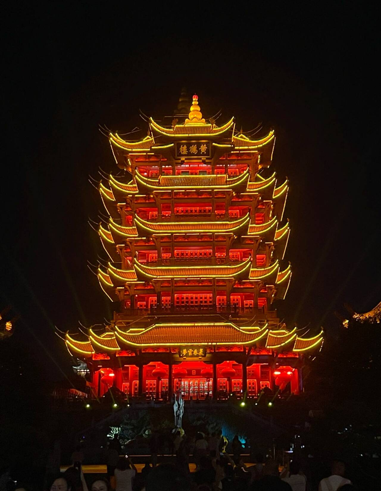
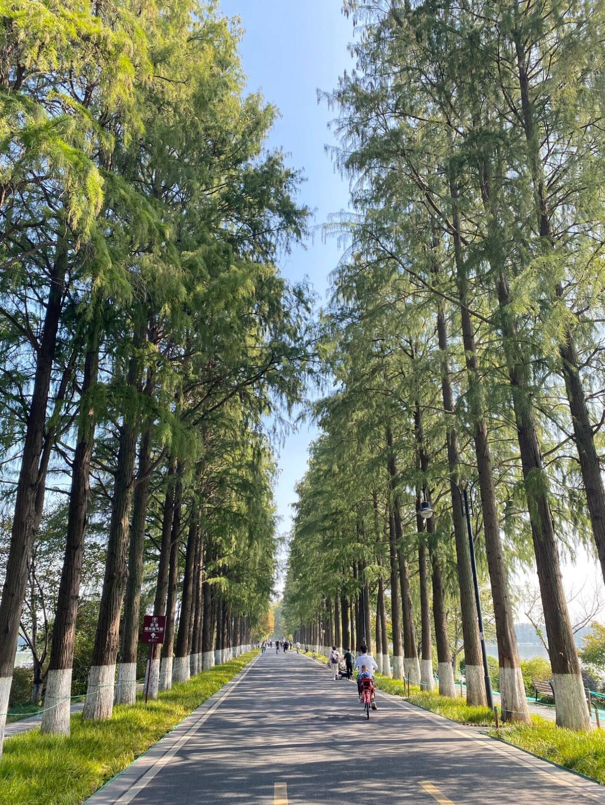
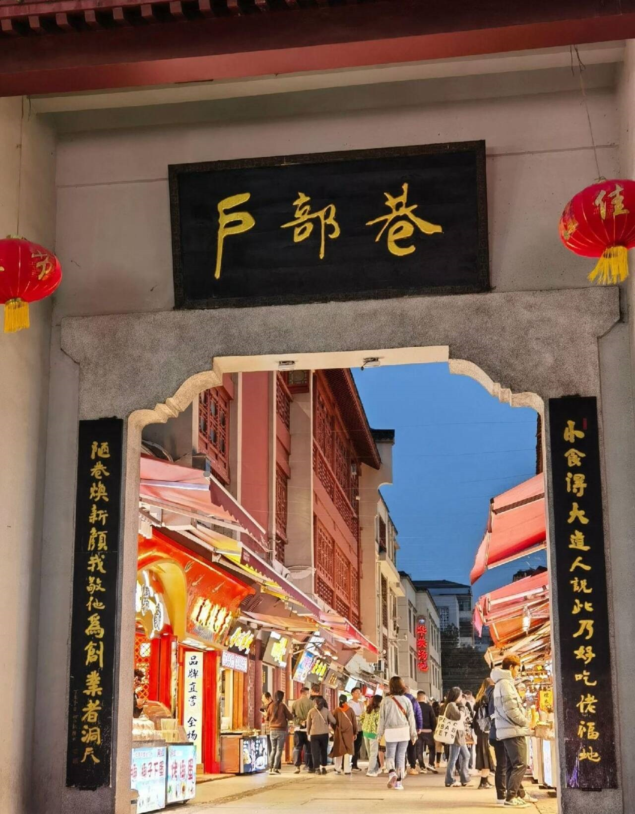

武汉城市印象
武汉是一座在江湖气中藏着浪漫的城市。早春三月，武大樱花大道落满粉雪，游人举着樱花汽水与老建筑合影。长江大桥下，轮渡载着看花归来的人们横渡夕阳，江风里混着樱瓣与热干面的香气。户部巷的婆婆们一边炸面窝，一边笑看年轻人头发沾着花瓣自拍。夜幕降临时，知音号游轮的汽笛声惊起岸边一片樱雨，而昙华林的小酒馆里，民谣歌手正唱着"樱花树下约好不散"——这座钢铁丛林般的城市，每年春天都会为樱花温柔投降。

黄鹤楼
"昔人已乘黄鹤去，此地空余黄鹤楼"，巍峨五层的黄鹤楼矗立蛇山之巅，朱漆廊柱与金色琉璃瓦在阳光下熠熠生辉。登楼远眺，长江大桥如钢铁琴弦横卧江面，游船划开的水痕与飞鸟轨迹在晴川阁下交错。崔颢题诗壁前总有游客默诵"白云千载空悠悠"，而铜铸黄鹤的翅尖，正掠过现代都市的天际线

东湖绿道
中国最大的城市湖泊，骑行、散步的好地方，东湖绿道如翡翠项链环绕湖岸，梧桐与香樟掩映的步道上，骑行者的笑声惊起水鸟。杉林湿地段的木栈桥蜿蜒入水，夕阳将帆船俱乐部的白帆染成蜜糖色。晨跑老人与玩滑板的少年在楚风园擦肩，空气中浮动着荷叶与咖啡的混合香气——这条28.7公里的生态绸带，编织着武汉人最诗意的日常。

户部巷
户部巷的清晨在热干面的芝麻香中苏醒，石板路上蒸腾着豆皮出锅的雾气。老师傅手持长筷翻飞，面窝在油锅里绽成金黄花朵，糊汤粉的摊位前排起蜿蜒长队。巷尾的桂花糊米酒与刚烤酥的油饼相撞，叮当的洗碗声里，市井烟火在这里熬煮了百年滋味。